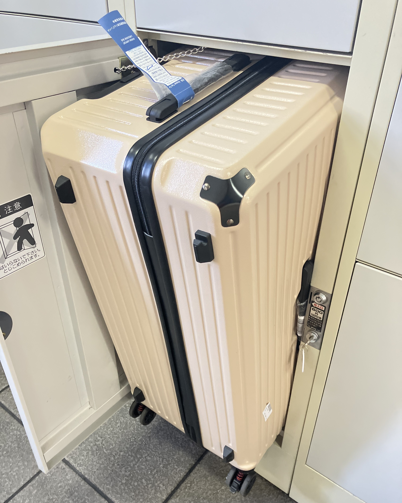
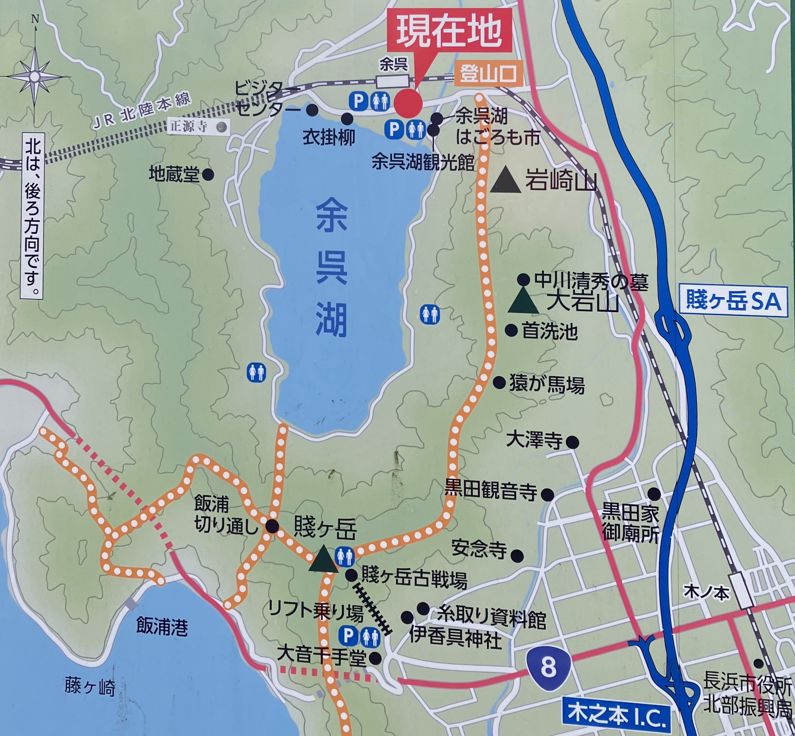
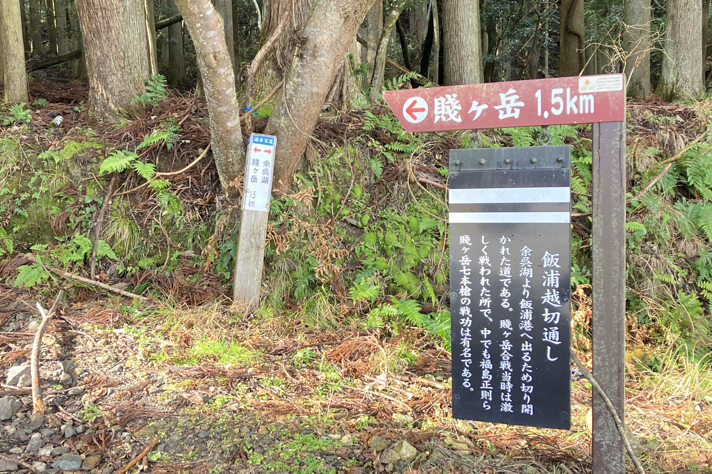
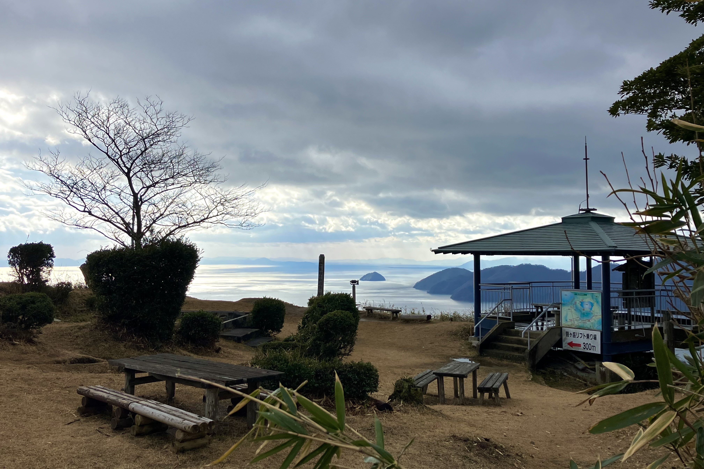
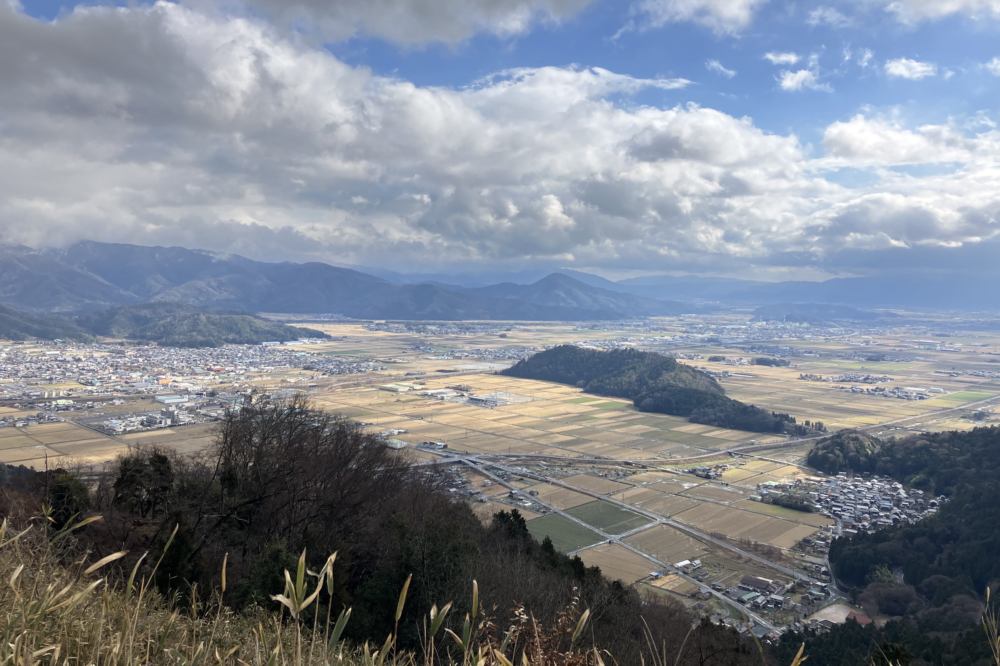

賤岳
賤岳位於滋賀縣的北部,分隔了琵琶湖與余吳湖。賤岳山頂除了是琵琶湖八景之一,也是歷史上賤岳之戰的主戰場。賤岳之戰是豐臣秀吉在統一日本過程中的關鍵戰役,他在余吳湖附近擊敗了柴田勝家,確立了自己的統治地位,鞏固了他在織田信長死後的繼承權,並逐漸邁向統一全國的目標。
交通
| 起訖 | 交通方式 | 費用 | 時間 |
|---|---|---|---|
| 京都車站 → 米原車站 | JR東海道、山陽本線 | 共1520日圓 | 約一小時 |
| 米原車站 → 余吳車站 | JR北陸本線 | 約30分鐘 |

紀錄
這次的目標是追雪,先沿著余吳湖畔走到車站對面,再開始爬賤岳!

余吳湖


賤岳
後來發現有纜車可以直達山頂,不過要在前一站的「木之本站」下車。


琵琶湖

